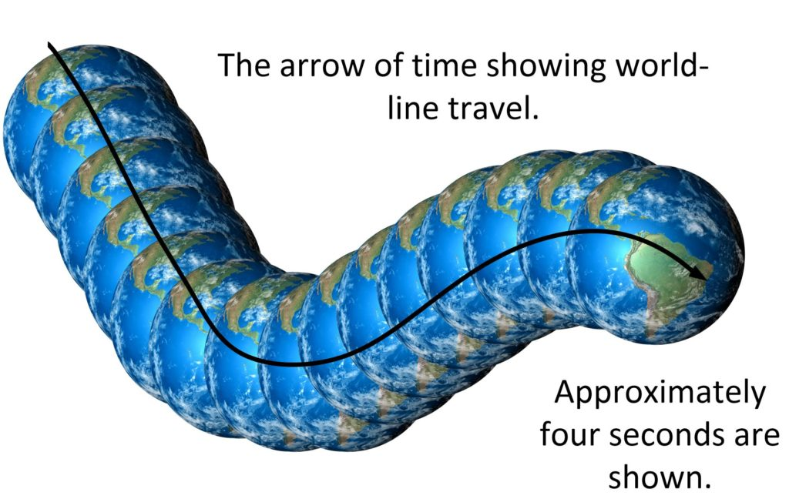
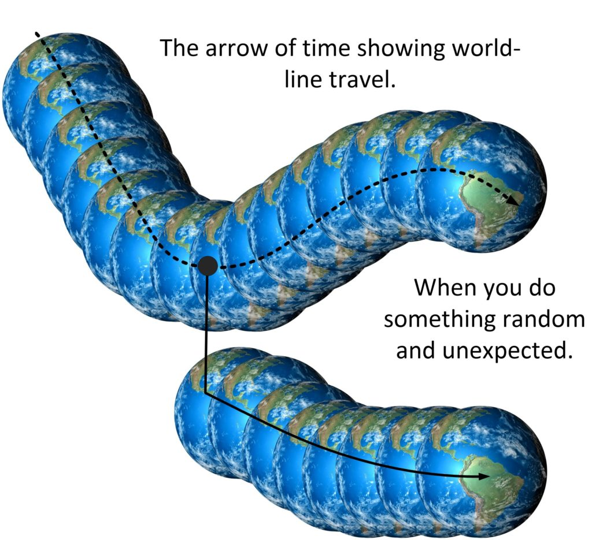

Phew! Yet another insanely long title.
Here, in this post, we are going to look at a (very) simple technique that enables you to change your destiny. It doesn’t have the degree of control that a prayer affirmation has, nor is it as illustrative as a dream board. Yet, this technique has advantages, and can be used in conjunction with a prayer affirmation campaign. It is ideal for those with very busy schedules, and too preoccupied with the rigors of life.
It’s a great way to “throw a wrench” into a life or situation that you are unhappy with.
The problem with it, is you really have zero control over the MWI navigational aspects.
Introduction & Review
I have covered the use of intention to control your life in other posts.
Essentially it is a technique that is derived from the most fundamental laws of quantum physics. Which states that; “What you think about eventually manifests within your reality”. And it works. It really does.
It has been proven in various scientific studies, and has been practiced by many people since the advent of such works as “The Secret”, and the movie “What the bleep do we know?”
The only thing is that people don’t really understand WHY it works. They argue that since we all share the entire universe together, how could one person’s thoughts alter the fabric of the entire universe? Isn’t that a tad bit outlandish? That one single lone person can change the entire enormity of the universe!
At which point I state the obvious.
The universe is not what everyone thinks it is. It is something else.
The universe is a series of world-lines, infinite (or near infinite) in number. Our consciousness occupies one world-line at a time. But for only a moment. Each world line then passes by and is replaced by another, and then another, and then another. Much like a movie that runs frame to frame.

It is our thoughts that manifest which frame we will visit next.
And each frame is for our consciousness alone. All those others, and those other things within that world-line are but shadows of a much bigger existence.
And that is how the universe works, and why guided thoughts enable you to navigate the world-lines to create your very own utopia.
I have other posts that go into a great deal of detail on how you can use various techniques to navigate your life. I have simple and basic technique. I have presented moderate and slightly more advanced techniques, and I have presented some truly advanced stuff that only the well-practiced expert should tamper with.
In this post, we will look at the simplest and easiest way to alter your destiny. And it doesn’t use conscious thought.
It uses odd and random behaviors to break your thought processes up.
Fate or the pre-birth established world-line
Every soul and consciousness establishes an “entry point” from which to enter a body for an experience upon Earth. It leaves Heaven and enters our physical reality universe.
Our physical reality universe is a complicated place, don't you know. It is filled with all sorts of "stuff" and "things" of which we as physical Humans nothing about. But it has laws. It has order. It has structure.
The souls creates a consciousness within Heaven.
The consciousness is then sent through a “transport tube” or a “path of light” into another universe. It enters the physical universe.
This “entry point” consists of three aspects;
- A physical body with an associated family, environment and lifestyle.
- A particular world-line that the body happens to exist within.
- A “default” “arrow of time” that is the most probable development of the earth experiences for that body.
For simplicity, I have referred to this set of initial conditions as the “pre-birth world-line”. When in reality it is [1] the set of initial conditions that [2] will establish the “fate” that [3] the consciousness will experience.
So, before anyone starts throwing potatoes at the computer screen, realize that we select (our consciousness) selects a fated reality… one where the highest probability of events (that our soul wants us to experience) will occur. Of course, we are free to make decisions within this reality, but it is actually fated in that there is actually very little deviation that the actual person will make in the life that they lead.
I’ve used this example before, but it’s a good example.
You are walking down the street. You see a little girl eating a vanilla ice cream cone. She takes a lick and the ice cream falls to the sidewalk. She starts to cry and you watch all this transpire. There are numerous things that you can do. [1] Continue on as planned. You are late for work, and being late is not good. [2] Comfort the little girl and buy her a new ice cream cone. [3] Bend down and lick up the ice cream that is on the sidewalk. [4] Beat the crap out of the server at the ice cream stand. [5] Go up to the little girl, press five dollars in her hand, and leave. [6] Just stop everything, and change your plans and go watch a movie instead. [7] Pull off all your clothes and do a little dance, and leave. Your default fated world-line will evolve as expected if you select option one [1]. As it is what you would normally be fated to do. You will move off the world-line the moment you select any of the other options [2 - 7]. The more extreme your action, the greater the change to your world-line travels. Some are minor, and you will (more than likely) "snap back" onto your previous (well established) world-line path. Some are major and your life is forever changed afterwards.
Any time you deviate from the expected course of action; the pre-birth established world-line, you change your destiny.
Use of this technique – The deviation from the expected
Now let’s talk about “deviations from the normally expected activity” which is the heart behind this technique.

This technique defines that you make unexpected random decisions within your life that permanently alters your world line direction.
Some notes:
- First of all, the Pre-birth determined world-line is selected by soul to provide a near fated frame work for you to learn lessons. It is like a little child riding a bicycle with training wheels and parents are all around them helping them so they will not fall. You can ride the bike. You can steer the bike. But no matter what you do, your parents will not permit you to ride onto the highway.
This is for your consciousness to obtain specific experiences. When you approach an opportunity that might change your life and fortunes, situations, or conditions will arise that will force to back on track within the previously fated world-line. Just like a parent helping your learn how to ride the bicycle. The way to break this level of control is to do the unexpected; the random odd-ball activity. Like (for instance, using the example herein) jumping of the bicycle and running straight into the highway yourself.
- You are permitted to deviate from the world-line your are riding on, because our life is not fated.
So you are free to do anything you like. However, if you pay attention, your actual choices are usually very tightly constrained. Sure, you have a choice between two jobs. One pays five times more more than the other, but you do have the choice to pick the job that pays less.
- Any deviation will have a great deal of influence in your new world line.
Even the smallest deviation can result in big unforeseen changes. In the example of the child riding a bicycle, what if the child just stops, and doesn't do anything? Perhaps a parent will come over and give the child a toy to play with, or try to urge it to continue, or maybe replace the bicycle with a pony.
- The degree of deviation, and the radical nature of the deviation, will influence new world-line generation.
Shooting a person, for instance, might end up getting you arrested, sent to prison, and forever spending the rest of your life in a small cinder-block cell. Or, using the child bicycle as an example, running into upcoming traffic might result in some terrible accidents to occur.
- It is difficult to predict the effect that any deviation from the norm might have.
Using a blue pen instead of a black pen might create some changes to your life. Using a purple pen might have even make greater changes. In the case of the child riding the bicycle, the child does not know about what a highway is, or that cars can run them all over. The child doesn't even think about this or even consider this situation.
- Making a habit of doing random “odd ball” and strange deviations from the “normal course” of your world-line will add a degree of randomness that will absolutely provide you with opportunities to change that life.
One day you feed a stray dog an old hamburger, the next you throw away all the clothes that you haven't worn in two years and buy new ones. You talk to the pretty cashier in the grocery store that you have never said "hi" to.
How it works
This system cannot guarantee any directed results. As the deviations from the norm are random, so will be the results. You do not know what will happen to your life. All that we can say is that the fated life that your soul and consciousness selected at the time previous to your birth has now been changed. You are now on a new path, you are in uncharted territory.
This can be good, or it can be bad.
Conclusion
This is a method that you can use and incorporate into your normal affirmation campaign, or it can be used from time to time to add a degree of versatility to your world-line selections.
The way this works is NOT by the controlled use of thought to manifest your reality. But rather to “jolt” yourself off the fated world-line path that the arrow of time is carrying you away upon.
As with “slides” this can have all sorts of repercussions.